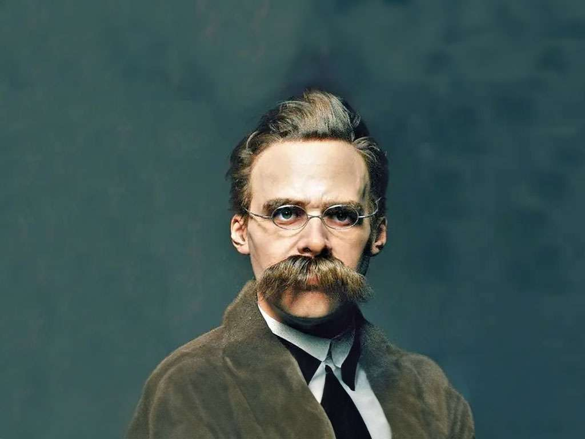

Para Nietzsche
"La voluntad es la verdadera esencia de la realidad, que no es estática ni inmutable, sino multiforme y cambiante."

La realidad es devenir y cambio, determinado solo por su propio querer, una voluntad libre que Nietzsche llama "voluntad de poder". Esta voluntad es expansiva y dominante, queriendo solo su propio querer. Nietzsche propone una nueva concepción de la verdad: no reside en el juicio ni en la adecuación del intelecto con el objeto, ya que los juicios congelan la realidad cambiante en conceptos estáticos. La verdad debe surgir de la intuición y captación directa de lo real, siendo mutable y no única, reflejando las contradicciones del cambio.